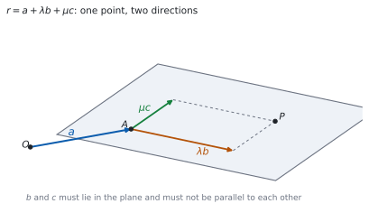
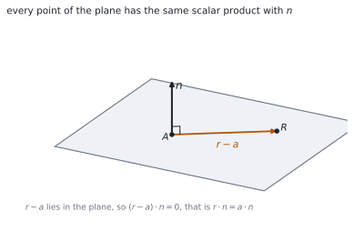

HL 3.17 — The vector equation of a plane（平面のベクトル方程式）
- \(\mathbf{r} = \mathbf{a}+\lambda\mathbf{b}+\mu\mathbf{c}\) の \(\mathbf{a}\)、\(\mathbf{b}\)、\(\mathbf{c}\) が何かを言える。
- 法線ベクトル（normal vector）をベクトル積から求められる。
- \(\mathbf{r}\cdot\mathbf{n} = \mathbf{a}\cdot\mathbf{n}\) の形で平面を書ける。
- デカルト方程式 \(ax+by+cz = d\) に直せる。
- \(ax+by+cz = d\) から、法線ベクトルをすぐ読み取れる。
- \(3\) 点を通る平面の方程式を求められる。
- 点が平面の上にあるかどうかを調べられる。
The idea
1. The vector equation of a plane（平面のベクトル方程式）
シラバスは、こう書いています。
Vector equations of a plane:
\(r = a + \lambda b + \mu c\), where \(b\) and \(c\) are non-parallel vectors within the plane.
\[ \mathbf{r} = \mathbf{a}+\lambda\mathbf{b}+\mu\mathbf{c} \tag{1}\]
公式集の 3.17 の欄にもあります。
Vector equation of a plane
\(\mathbf{a}\) は平面の上の点、\(\mathbf{b}\) と \(\mathbf{c}\) は平面の中の、平行でない \(2\) 方向です。

2. Two parameters（媒介変数が \(2\) つ）
直線は媒介変数が \(1\) つ、平面は \(2\) つです（HL 3.14）。
この「\(1\) つと \(2\) つ」が、\(1\) 次元と \(2\) 次元のちがいです（第 2 節）。\(\lambda\) と \(\mu\) を別々に動かすと、平面の上のどの点にも届きます。
\(\mathbf{c} = k\mathbf{b}\) なら、\(\lambda\mathbf{b}+\mu\mathbf{c} = (\lambda+k\mu)\mathbf{b}\) です。
これは \(\mathbf{b}\) の向きのスカラー倍にすぎず、直線にしかなりません。だからシラバスは「non-parallel」と書いています。
3. The normal vector（法線ベクトル）
平面に垂直なベクトルを、法線ベクトル \(\mathbf{n}\) といいます。
\(\mathbf{b}\) と \(\mathbf{c}\) が平面の中の \(2\) 方向なら、そのベクトル積が法線です（HL 3.16）。
\[ \mathbf{n} = \mathbf{b}\times\mathbf{c} \tag{2}\]
\(\mathbf{b}\) と \(\mathbf{c}\) が平行でないからこそ、\(\mathbf{n} \neq \mathbf{0}\) になります（HL 3.16）。
法線はスカラー倍しても法線です。成分が整数になるように約分しておくと、後が楽です。
4. The scalar product form（内積の形）
\(r \cdot n = a \cdot n\), where \(n\) is a normal to the plane and \(a\) is the position vector of a point on the plane.
\[ \mathbf{r}\cdot\mathbf{n} = \mathbf{a}\cdot\mathbf{n} \tag{3}\]
公式集では、こう呼ばれています。
Equation of a plane
(using the normal vector)
平面の上の点 \(R\) について、\(\mathbf{r}-\mathbf{a}\) は平面の中のベクトルなので、\(\mathbf{n}\) と垂直です。ですから \((\mathbf{r}-\mathbf{a})\cdot\mathbf{n} = 0\)、つまり 式 3 です。

右辺はただの数です。先に計算して \(d\) と書いてしまってかまいません。
5. The Cartesian equation（デカルト方程式）
Cartesian equation of a plane \(ax + by + cz = d\).
\(\mathbf{r} = \begin{pmatrix} x \\ y \\ z \end{pmatrix}\)、\(\mathbf{n} = \begin{pmatrix} a \\ b \\ c \end{pmatrix}\) とすると、式 3 の左辺は \(ax+by+cz\) です。
\[ ax+by+cz = d, \qquad d = \mathbf{a}\cdot\mathbf{n} \tag{4}\]
\(ax+by+cz = d\) を見たら、\(\mathbf{n} = \begin{pmatrix} a \\ b \\ c \end{pmatrix}\) です。
計算はいりません。 これは、この単元でいちばんよく使う読み方です。\(d\) の値は法線には関係しません。
6. A plane through three points（\(3\) 点を通る平面）
\(3\) 点 \(A\)、\(B\)、\(C\) が与えられたときの手順です。
- \(\overrightarrow{AB}\) と \(\overrightarrow{AC}\) を作る（同じ頂点から）。
- \(\mathbf{n} = \overrightarrow{AB}\times\overrightarrow{AC}\) を計算する。
- \(d = \mathbf{a}\cdot\mathbf{n}\) を計算して、式 4 に入れる。
検算は、残りの \(2\) 点を代入することです。\(B\) と \(C\) でも同じ \(d\) が出なければなりません。
\(3\) 点が一直線上にあると、\(\overrightarrow{AB}\times\overrightarrow{AC} = \mathbf{0}\) になって、平面が決まりません。
7. Is a point in the plane?（点が平面の上にあるか）
デカルト形なら、代入するだけです。
\[ \text{点} \ (x_{0},\ y_{0},\ z_{0}) \ \text{が平面の上} \quad \Longleftrightarrow \quad ax_{0}+by_{0}+cz_{0} = d \tag{5}\]
ベクトル形のまま調べるには \(\lambda\) と \(\mu\) の連立方程式を解くことになるので、まずデカルト形に直すほうが速いです。
同じ考えで、直線が平面の中にあるかも調べられます。直線の点が平面の上にあり、かつ方向ベクトルが \(\mathbf{n}\) と垂直なら、直線はまるごと平面の中にあります。
Why it works
なぜ、媒介変数が \(2\) つなのか
平面の上で動くには、独立した \(2\) つの向きが要ります。「たて」と「よこ」です。
\(\lambda\) と \(\mu\) を別々に選ぶと、\(\lambda\mathbf{b}+\mu\mathbf{c}\) は平面の中のどのベクトルにもなれます。これを \(\mathbf{a}\) に足すと、平面の上のどの点にも届きます。
\(\mathbf{b}\) と \(\mathbf{c}\) が平行だと、向きが実質 \(1\) つしかありません。\(1\) つの向きで届くのは直線までです。
なぜ、\(\mathbf{r}\cdot\mathbf{n}\) がどの点でも同じなのか
\(R\) を平面の上のどの点にとっても、\(\mathbf{r}-\mathbf{a}\) は平面の中に寝ています。\(\mathbf{n}\) は平面に垂直なので、内積は \(0\) です。
\[ (\mathbf{r}-\mathbf{a})\cdot\mathbf{n} = 0 \quad \Longrightarrow \quad \mathbf{r}\cdot\mathbf{n}-\mathbf{a}\cdot\mathbf{n} = 0 \]
分配法則を使いました（HL 3.13）。移項すれば 式 3 です。
\(\mathbf{r}\cdot\mathbf{n}\) は「\(\mathbf{n}\) の向きに測った高さ」だと思ってください。平面の上の点は、すべて同じ高さにあります。
なぜ、係数が法線ベクトルになるのか
\(\mathbf{n} = \begin{pmatrix} a \\ b \\ c \end{pmatrix}\) として内積を成分で書くと
\[ \mathbf{r}\cdot\mathbf{n} = ax+by+cz \]
です。これが \(d\) に等しい、という式がデカルト方程式です。
つまり、\(ax+by+cz = d\) はもともと内積の式です。係数を縦に並べれば法線が出るのは、そのためです。
なぜ、法線はスカラー倍してよいのか
\(\mathbf{n}\) が平面に垂直なら、\(k\mathbf{n}\) も垂直です（\(k \neq 0\)）。
式のほうは、両辺が \(k\) 倍されるだけです。
\[ \mathbf{r}\cdot(k\mathbf{n}) = \mathbf{a}\cdot(k\mathbf{n}) \quad \Longleftrightarrow \quad k\left(\mathbf{r}\cdot\mathbf{n}\right) = k\left(\mathbf{a}\cdot\mathbf{n}\right) \]
\(k \neq 0\) なので、同値です。\(2x+4y-6z = 10\) と \(x+2y-3z = 5\) は同じ平面です。
Worked examples
問題文は英語です。意味が理解できなかったら、問題文の下の「日本語訳」を開いてください。解説は日本語です。
例題も演習も、すべて電卓なしで解けます。 Paper 1 のつもりで解いてください。
例題 1 A plane contains the point \(A(1,\ 2,\ 3)\) and the directions \(\begin{pmatrix} 1 \\ 0 \\ 1 \end{pmatrix}\) and \(\begin{pmatrix} 0 \\ 1 \\ -1 \end{pmatrix}\).
(a) Write down a vector equation of the plane.
(b) Find a normal vector to the plane.
(c) Find the Cartesian equation of the plane.
日本語訳
平面が点 \(A(1,\ 2,\ 3)\) を含み、\(\begin{pmatrix} 1 \\ 0 \\ 1 \end{pmatrix}\)、\(\begin{pmatrix} 0 \\ 1 \\ -1 \end{pmatrix}\) の向きを含んでいます。
(a) 平面のベクトル方程式を書きなさい。
(b) 法線ベクトルを \(1\) つ求めなさい。
(c) 平面のデカルト方程式を求めなさい。
(a) 式 1 にそのまま入れます。
\[ \mathbf{r} = \begin{pmatrix} 1 \\ 2 \\ 3 \end{pmatrix} +\lambda\begin{pmatrix} 1 \\ 0 \\ 1 \end{pmatrix} +\mu\begin{pmatrix} 0 \\ 1 \\ -1 \end{pmatrix} \]
(b) ベクトル積です（式 2）。
\[ \begin{pmatrix} 1 \\ 0 \\ 1 \end{pmatrix}\times\begin{pmatrix} 0 \\ 1 \\ -1 \end{pmatrix} = \begin{pmatrix} (0)(-1)-(1)(1) \\ (1)(0)-(1)(-1) \\ (1)(1)-(0)(0) \end{pmatrix} = \begin{pmatrix} -1 \\ 1 \\ 1 \end{pmatrix} \]
(c) \(d = \mathbf{a}\cdot\mathbf{n} = (1)(-1)+(2)(1)+(3)(1) = 4\) です。
\[ -x+y+z = 4 \]
検算。 法線が \(2\) 方向と垂直かを見ます。\(-1+0+1 = 0\) ✓、\(0+1-1 = 0\) ✓
検算（別の点で）。 \(\lambda = 1\)、\(\mu = 0\) の点は \((2,\ 2,\ 4)\)。\(-2+2+4 = 4\) ✓ 同じ \(d\) です。
(a) \(\mathbf{r} = \begin{pmatrix} 1 \\ 2 \\ 3 \end{pmatrix}+\lambda\begin{pmatrix} 1 \\ 0 \\ 1 \end{pmatrix}+\mu\begin{pmatrix} 0 \\ 1 \\ -1 \end{pmatrix}\)
(b) \(\mathbf{n} = \begin{pmatrix} 1 \\ 0 \\ 1 \end{pmatrix}\times\begin{pmatrix} 0 \\ 1 \\ -1 \end{pmatrix} = \begin{pmatrix} -1 \\ 1 \\ 1 \end{pmatrix}\)
(c) \(d = (1)(-1)+(2)(1)+(3)(1) = 4\), so \(-x+y+z = 4\)
例題 2 Find the Cartesian equation of the plane through \(A(1,\ 0,\ 0)\), \(B(0,\ 1,\ 0)\) and \(C(0,\ 0,\ 1)\).
日本語訳
\(A(1,\ 0,\ 0)\)、\(B(0,\ 1,\ 0)\)、\(C(0,\ 0,\ 1)\) を通る平面のデカルト方程式を求めなさい。
\(A\) から出る \(2\) 本を作ります（第 6 節）。
\[ \overrightarrow{AB} = \begin{pmatrix} -1 \\ 1 \\ 0 \end{pmatrix}, \qquad \overrightarrow{AC} = \begin{pmatrix} -1 \\ 0 \\ 1 \end{pmatrix} \]
\[ \mathbf{n} = \overrightarrow{AB}\times\overrightarrow{AC} = \begin{pmatrix} (1)(1)-(0)(0) \\ (0)(-1)-(-1)(1) \\ (-1)(0)-(1)(-1) \end{pmatrix} = \begin{pmatrix} 1 \\ 1 \\ 1 \end{pmatrix} \]
\(d = \mathbf{a}\cdot\mathbf{n} = (1)(1)+(0)(1)+(0)(1) = 1\) です。
\[ x+y+z = 1 \]
検算。 \(B\) を入れます。 \(0+1+0 = 1\) ✓
検算（\(C\) のほう）。 \(0+0+1 = 1\) ✓ \(3\) 点とも通ります。
\[\overrightarrow{AB} = \begin{pmatrix} -1 \\ 1 \\ 0 \end{pmatrix}, \qquad \overrightarrow{AC} = \begin{pmatrix} -1 \\ 0 \\ 1 \end{pmatrix}\]
\[\mathbf{n} = \overrightarrow{AB}\times\overrightarrow{AC} = \begin{pmatrix} 1 \\ 1 \\ 1 \end{pmatrix}, \qquad d = \mathbf{a}\cdot\mathbf{n} = 1\]
\[x+y+z = 1\]
例題 3 The plane \(\Pi\) has equation \(2x-y+z = 6\).
(a) Determine whether the point \((2,\ 1,\ 3)\) lies in \(\Pi\).
(b) Determine whether the point \((1,\ 1,\ 1)\) lies in \(\Pi\).
日本語訳
平面 \(\Pi\) の方程式を \(2x-y+z = 6\) とします。
(a) 点 \((2,\ 1,\ 3)\) が \(\Pi\) の上にあるかどうかを調べなさい。
(b) 点 \((1,\ 1,\ 1)\) が \(\Pi\) の上にあるかどうかを調べなさい。
代入するだけです（式 5）。
(a) \(2(2)-1+3 = 4-1+3 = 6\)。右辺と同じなので、平面の上にあります。
(b) \(2(1)-1+1 = 2\)。\(6\) ではないので、平面の上にありません。
検算。 法線を読んでおきます。 \(\mathbf{n} = \begin{pmatrix} 2 \\ -1 \\ 1 \end{pmatrix}\) ✓ 係数をそのまま縦に並べただけです。
検算（(b) のずれ）。 \(6-2 = 4\) だけ足りません ✓ 点は平面から \(\mathbf{n}\) の向きにずれています。
(a) \(2(2)-(1)+(3) = 6\), which equals the right-hand side, so the point lies in \(\Pi\).
(b) \(2(1)-(1)+(1) = 2 \neq 6\), so the point does not lie in \(\Pi\).
例題 4 The plane \(\Pi\) has equation \(3x+2y-z = 12\). Write down a normal vector, find a point in \(\Pi\), and hence write a vector equation of \(\Pi\).
日本語訳
平面 \(\Pi\) の方程式を \(3x+2y-z = 12\) とします。法線ベクトルを書き、\(\Pi\) の上の点を \(1\) つ求め、それを使って \(\Pi\) のベクトル方程式を書きなさい。
法線は係数から読みます（第 5 節）。
\[ \mathbf{n} = \begin{pmatrix} 3 \\ 2 \\ -1 \end{pmatrix} \]
点は、\(2\) つの座標を \(0\) にすると早いです。\(y = z = 0\) とすると \(3x = 12\)、つまり \((4,\ 0,\ 0)\) です。
平面の中の方向は、\(\mathbf{n}\) と内積が \(0\) になるベクトルを \(2\) 本、平行でないように選びます。
\[ \begin{pmatrix} 2 \\ -3 \\ 0 \end{pmatrix}: \ 6-6+0 = 0, \qquad \begin{pmatrix} 1 \\ 0 \\ 3 \end{pmatrix}: \ 3+0-3 = 0 \]
\[ \mathbf{r} = \begin{pmatrix} 4 \\ 0 \\ 0 \end{pmatrix} +\lambda\begin{pmatrix} 2 \\ -3 \\ 0 \end{pmatrix} +\mu\begin{pmatrix} 1 \\ 0 \\ 3 \end{pmatrix} \]
検算。 \(2\) 方向が平行でないかを見ます。ベクトル積は \(\begin{pmatrix} -9 \\ -6 \\ 3 \end{pmatrix} \neq \mathbf{0}\) ✓
検算（法線にもどるか）。 \(\begin{pmatrix} -9 \\ -6 \\ 3 \end{pmatrix} = -3\begin{pmatrix} 3 \\ 2 \\ -1 \end{pmatrix}\) ✓ もとの法線のスカラー倍です。
\[\mathbf{n} = \begin{pmatrix} 3 \\ 2 \\ -1 \end{pmatrix}\]
Taking \(y = z = 0\) gives \(3x = 12\), so \((4,\ 0,\ 0)\) lies in \(\Pi\).
\[\mathbf{r} = \begin{pmatrix} 4 \\ 0 \\ 0 \end{pmatrix}+\lambda\begin{pmatrix} 2 \\ -3 \\ 0 \end{pmatrix}+\mu\begin{pmatrix} 1 \\ 0 \\ 3 \end{pmatrix}\]
試験ではこう書く
The coefficients of a Cartesian equation are the components of a normal vector, so \(\mathbf{n} = \begin{pmatrix} 3 \\ 2 \\ -1 \end{pmatrix}\) is normal to \(\Pi\).
Any solution of the equation gives a point of the plane. Setting \(y = 0\) and \(z = 0\) leaves \(3x = 12\), so \((4,\ 0,\ 0)\) lies in \(\Pi\) and its position vector may be used as \(\mathbf{a}\).
A vector lies in the plane exactly when it is perpendicular to \(\mathbf{n}\). The vectors \(\begin{pmatrix} 2 \\ -3 \\ 0 \end{pmatrix}\) and \(\begin{pmatrix} 1 \\ 0 \\ 3 \end{pmatrix}\) both have scalar product zero with \(\mathbf{n}\), and they are not parallel to each other, since neither is a scalar multiple of the other. They may therefore be used as \(\mathbf{b}\) and \(\mathbf{c}\), giving
\[\mathbf{r} = \begin{pmatrix} 4 \\ 0 \\ 0 \end{pmatrix}+\lambda\begin{pmatrix} 2 \\ -3 \\ 0 \end{pmatrix}+\mu\begin{pmatrix} 1 \\ 0 \\ 3 \end{pmatrix}\]
Many other answers are possible, since both the point and the two directions can be chosen in infinitely many ways.
Common errors
平行だと、出てくるのは直線です（第 2 節）。
ベクトル積が \(\mathbf{0}\) にならないことを確かめてください。\(\mathbf{0}\) なら、選び直しです。
\(\mathbf{n}\) は \(\begin{pmatrix} a \\ b \\ c \end{pmatrix}\) だけです（第 5 節）。
\(d\) は平面の位置を決める数で、向きには関係しません。\(d\) を変えると、平行な別の平面になります。
\(\overrightarrow{AB}\) と \(\overrightarrow{AC}\) のように、同じ頂点から出します（第 6 節）。
\(\overrightarrow{AB}\) と \(\overrightarrow{BC}\) でも法線は同じ向きになりますが、\(d\) を出すときに使う点をまちがえやすくなります。
\(d = \mathbf{a}\cdot\mathbf{n}\) の \(\mathbf{a}\) は、平面の上の点でなければなりません（式 4）。
原点を使ってしまうと、\(d = 0\)、つまり原点を通る平面になってしまいます。
\(\mathbf{n}\) を \(k\) で割ったら、\(d\) も \(k\) で割ります（第 4 節）。
片方だけ直すと、平行な別の平面になってしまいます。\(2x+4y-6z = 10\) は \(x+2y-3z = 5\) であって、\(x+2y-3z = 10\) ではありません。
Exercises
各問題に、折りたたみが \(3\) つ付いています。日本語訳、解答例（答案用紙に書くべきこと。英語です）、解説（なぜそうなるか。日本語です）。
まず自分で解いて、次に解答例と見くらべてください。解説は、合わなかったときだけ開けば十分です。
1 Write down a vector equation of the plane through \((2,\ 1,\ 0)\) containing the directions \(\begin{pmatrix} 1 \\ 1 \\ 0 \end{pmatrix}\) and \(\begin{pmatrix} 0 \\ 1 \\ 1 \end{pmatrix}\).
日本語訳
\((2,\ 1,\ 0)\) を通り、\(\begin{pmatrix} 1 \\ 1 \\ 0 \end{pmatrix}\)、\(\begin{pmatrix} 0 \\ 1 \\ 1 \end{pmatrix}\) の向きを含む平面のベクトル方程式を書きなさい。
\[\mathbf{r} = \begin{pmatrix} 2 \\ 1 \\ 0 \end{pmatrix} +\lambda\begin{pmatrix} 1 \\ 1 \\ 0 \end{pmatrix} +\mu\begin{pmatrix} 0 \\ 1 \\ 1 \end{pmatrix}\]
式 1 に当てはめるだけです。\(2\) 方向が平行でないことだけ、目で確かめておきます。
検算（\(\lambda = \mu = 0\)）。 \((2,\ 1,\ 0)\) が出ます ✓
検算（平行でないこと）。 第 \(1\) 成分は \(1\) と \(0\) なので、スカラー倍にはなりません ✓
2 Find a normal vector to the plane \(\mathbf{r} = \begin{pmatrix} 1 \\ 0 \\ 2 \end{pmatrix}+\lambda\begin{pmatrix} 2 \\ 0 \\ 1 \end{pmatrix}+\mu\begin{pmatrix} 1 \\ 1 \\ 0 \end{pmatrix}\).
日本語訳
上の平面の法線ベクトルを \(1\) つ求めなさい。
\[\mathbf{n} = \begin{pmatrix} 2 \\ 0 \\ 1 \end{pmatrix}\times\begin{pmatrix} 1 \\ 1 \\ 0 \end{pmatrix} = \begin{pmatrix} (0)(0)-(1)(1) \\ (1)(1)-(2)(0) \\ (2)(1)-(0)(1) \end{pmatrix} = \begin{pmatrix} -1 \\ 1 \\ 2 \end{pmatrix}\]
\(2\) つの向きのベクトル積です（式 2）。\(\mathbf{a}\) は使いません。
検算。 \(\begin{pmatrix} 2 \\ 0 \\ 1 \end{pmatrix}\) との内積は \(-2+0+2 = 0\) ✓
検算（もう \(1\) 本）。 \(\begin{pmatrix} 1 \\ 1 \\ 0 \end{pmatrix}\) との内積は \(-1+1+0 = 0\) ✓
3 Find the Cartesian equation of the plane with normal vector \(\begin{pmatrix} 2 \\ -1 \\ 3 \end{pmatrix}\) passing through \((1,\ 1,\ 1)\).
日本語訳
法線ベクトルが \(\begin{pmatrix} 2 \\ -1 \\ 3 \end{pmatrix}\) で、\((1,\ 1,\ 1)\) を通る平面のデカルト方程式を求めなさい。
\[d = (1)(2)+(1)(-1)+(1)(3) = 4\]
\[2x-y+3z = 4\]
係数は法線、右辺は \(\mathbf{a}\cdot\mathbf{n}\) です（式 4）。法線が与えられているので、ベクトル積は要りません。
検算。 \((1,\ 1,\ 1)\) を入れると \(2-1+3 = 4\) ✓
検算（別の点）。 \((2,\ 0,\ 0)\) も \(4\) になるので、この平面の上にあります ✓
4 Write down a normal vector to the plane \(5x-2y+z = 7\).
日本語訳
平面 \(5x-2y+z = 7\) の法線ベクトルを書きなさい。
\[\mathbf{n} = \begin{pmatrix} 5 \\ -2 \\ 1 \end{pmatrix}\]
係数を縦に並べるだけです（第 5 節）。計算はありません。
\(7\) は使いません。\(d\) は位置、係数は向きです。
検算。 \(7\) を \(0\) に変えても、平面の向きは変わりません ✓ 原点を通る平行な平面になります。
検算（スカラー倍）。 \(\begin{pmatrix} 10 \\ -4 \\ 2 \end{pmatrix}\) も法線です ✓
5 Determine whether the point \((3,\ -1,\ 2)\) lies in the plane \(x+2y-z = -1\).
日本語訳
点 \((3,\ -1,\ 2)\) が平面 \(x+2y-z = -1\) の上にあるかどうかを調べなさい。
\[(3)+2(-1)-(2) = 3-2-2 = -1\]
This equals the right-hand side, so the point lies in the plane.
代入するだけです（式 5）。符号に気をつけてください。
検算（符号）。 \(-z\) なので \(-2\)、\(2y\) なので \(-2\) ✓ 足して \(3-4 = -1\) です。
検算（近い点）。 \((3,\ -1,\ 1)\) なら \(0\) になり、平面の上にありません ✓
6 Find the Cartesian equation of the plane through \(A(1,\ 1,\ 0)\), \(B(2,\ 0,\ 1)\) and \(C(0,\ 2,\ 3)\).
日本語訳
\(A(1,\ 1,\ 0)\)、\(B(2,\ 0,\ 1)\)、\(C(0,\ 2,\ 3)\) を通る平面のデカルト方程式を求めなさい。
\[\overrightarrow{AB} = \begin{pmatrix} 1 \\ -1 \\ 1 \end{pmatrix}, \qquad \overrightarrow{AC} = \begin{pmatrix} -1 \\ 1 \\ 3 \end{pmatrix}\]
\[\overrightarrow{AB}\times\overrightarrow{AC} = \begin{pmatrix} -4 \\ -4 \\ 0 \end{pmatrix} = -4\begin{pmatrix} 1 \\ 1 \\ 0 \end{pmatrix}\]
\[d = (1)(1)+(1)(1)+(0)(0) = 2, \qquad x+y = 2\]
法線は約分してから \(d\) を出すと楽です（第 4 節）。約分した法線で \(d\) を出せば、直し忘れも起きません。
\(z\) の係数が \(0\) なので、この平面は \(z\) 軸と平行です。\(z\) をいくつにしても \(x+y = 2\) でさえあれば平面の上にあります。
検算（\(B\)）。 \(2+0 = 2\) ✓
検算（\(C\)）。 \(0+2 = 2\) ✓ \(3\) 点とも通ります。
7 The plane \(\Pi\) has equation \(2x+y-z = 4\). Find a point in \(\Pi\) and two non-parallel directions in \(\Pi\), and hence write a vector equation of \(\Pi\).
日本語訳
平面 \(\Pi\) の方程式を \(2x+y-z = 4\) とします。\(\Pi\) の上の点を \(1\) つと、\(\Pi\) の中の平行でない \(2\) 方向を求め、\(\Pi\) のベクトル方程式を書きなさい。
\[\mathbf{n} = \begin{pmatrix} 2 \\ 1 \\ -1 \end{pmatrix}\]
Taking \(y = z = 0\) gives \((2,\ 0,\ 0)\).
\[\begin{pmatrix} 1 \\ -2 \\ 0 \end{pmatrix}\cdot\mathbf{n} = 0, \qquad \begin{pmatrix} 0 \\ 1 \\ 1 \end{pmatrix}\cdot\mathbf{n} = 0\]
\[\mathbf{r} = \begin{pmatrix} 2 \\ 0 \\ 0 \end{pmatrix} +\lambda\begin{pmatrix} 1 \\ -2 \\ 0 \end{pmatrix} +\mu\begin{pmatrix} 0 \\ 1 \\ 1 \end{pmatrix}\]
答えは \(1\) つではありません。 点も \(2\) 方向も、選び方は無数にあります。
\(2\) 方向は「\(\mathbf{n}\) との内積が \(0\)」「たがいに平行でない」の \(2\) つを満たせばよいだけです。
検算（点）。 \(2(2)+0-0 = 4\) ✓
検算（平行でないこと）。 ベクトル積は \(\begin{pmatrix} -2 \\ -1 \\ 1 \end{pmatrix} \neq \mathbf{0}\) で、\(\mathbf{n}\) の \(-1\) 倍です ✓ もとの法線にもどりました。
8 Show that the line \(\mathbf{r} = \begin{pmatrix} 1 \\ 0 \\ 1 \end{pmatrix}+\lambda\begin{pmatrix} 1 \\ 1 \\ 0 \end{pmatrix}\) lies entirely in the plane \(x-y+z = 2\).
日本語訳
直線 \(\mathbf{r} = \begin{pmatrix} 1 \\ 0 \\ 1 \end{pmatrix}+\lambda\begin{pmatrix} 1 \\ 1 \\ 0 \end{pmatrix}\) が、平面 \(x-y+z = 2\) の中にすべて含まれることを示しなさい。
The point \((1,\ 0,\ 1)\) gives \(1-0+1 = 2\), so it lies in the plane.
The normal is \(\mathbf{n} = \begin{pmatrix} 1 \\ -1 \\ 1 \end{pmatrix}\), and \(\begin{pmatrix} 1 \\ 1 \\ 0 \end{pmatrix}\cdot\mathbf{n} = 1-1+0 = 0\), so the direction is perpendicular to \(\mathbf{n}\).
A line with a point in the plane and a direction perpendicular to the normal lies entirely in the plane.
\(2\) つ示します（第 7 節）。点が平面の上にあること、方向が法線と垂直なこと。
片方だけでは足りません。方向だけ垂直なら平行、点だけ載っていれば交わる、という別の場合になります。
検算（一般の \(\lambda\)）。 点は \((1+\lambda,\ \lambda,\ 1)\)。代入すると \((1+\lambda)-\lambda+1 = 2\) ✓ \(\lambda\) が消えました。
検算（平行なだけの直線）。 点を \((0,\ 0,\ 0)\) に変えると \(0 \neq 2\) ✓ 平面と平行で、中には入りません。
試験ではこう書く
A line lies in a plane when two conditions hold: one point of the line is in the plane, and the direction of the line is perpendicular to the normal of the plane.
For the point, substitute \((1,\ 0,\ 1)\) into the equation of the plane: \(1-0+1 = 2\), which is the right-hand side, so this point lies in the plane.
For the direction, read the normal from the coefficients: \(\mathbf{n} = \begin{pmatrix} 1 \\ -1 \\ 1 \end{pmatrix}\). Then \(\begin{pmatrix} 1 \\ 1 \\ 0 \end{pmatrix}\cdot\begin{pmatrix} 1 \\ -1 \\ 1 \end{pmatrix} = 1-1+0 = 0\), so the direction is perpendicular to the normal and therefore lies in the plane.
Alternatively, substitute the general point \((1+\lambda,\ \lambda,\ 1)\) of the line into the equation: \((1+\lambda)-\lambda+1 = 2\) for every value of \(\lambda\). Since the equation holds identically, every point of the line is in the plane.
9 Explain why the equation of a plane needs two parameters while the equation of a line needs only one.
日本語訳
平面の方程式に媒介変数が \(2\) つ必要で、直線には \(1\) つで足りるのはなぜかを説明しなさい。
A line is one-dimensional: from a fixed point every other point is reached by moving a certain amount along a single direction, so one parameter is enough.
A plane is two-dimensional: two independent directions are needed, and the amounts moved along them can be chosen separately, so two parameters are required.
If the two directions were parallel, their combination would still be a multiple of one direction and the equation would describe a line, not a plane.
次元の話です（第 2 節）。動ける向きの数が、媒介変数の数になります。
「平行でない」という条件がなぜ要るかも、ここから分かります。平行なら、向きは実質 \(1\) つだからです。
検算（直線）。 \(\mathbf{a}+\lambda\mathbf{b}\) で \(\lambda\) を動かすと、\(1\) 本の線しか描けません ✓
検算（平行にしてみる）。 \(\mathbf{c} = 2\mathbf{b}\) とすると \(\lambda\mathbf{b}+\mu(2\mathbf{b}) = (\lambda+2\mu)\mathbf{b}\) ✓ 係数が \(1\) つにまとまります。
試験ではこう書く
The number of parameters matches the number of independent directions in which a point can move within the object.
A line is one-dimensional. Once a point \(\mathbf{a}\) on it and a direction \(\mathbf{b}\) are fixed, every other point of the line is \(\mathbf{a}+\lambda\mathbf{b}\) for exactly one value of \(\lambda\), so a single parameter describes the whole line.
A plane is two-dimensional. From a point \(\mathbf{a}\) in the plane, a point can move in two independent directions \(\mathbf{b}\) and \(\mathbf{c}\), and the amounts moved along them are chosen independently. Every point of the plane is therefore \(\mathbf{a}+\lambda\mathbf{b}+\mu\mathbf{c}\), and both parameters are needed.
This also explains why \(\mathbf{b}\) and \(\mathbf{c}\) must not be parallel. If \(\mathbf{c} = k\mathbf{b}\) then \(\lambda\mathbf{b}+\mu\mathbf{c} = (\lambda+k\mu)\mathbf{b}\), which is a single multiple of \(\mathbf{b}\). The two parameters would collapse into one and the equation would describe a line.
10 A student writes: “The plane \(\mathbf{r} = \mathbf{a}+\lambda\mathbf{b}+\mu\mathbf{c}\) has normal vector \(\mathbf{b}+\mathbf{c}\).” Identify the error and give the correct normal vector.
日本語訳
ある生徒が「平面 \(\mathbf{r} = \mathbf{a}+\lambda\mathbf{b}+\mu\mathbf{c}\) の法線ベクトルは \(\mathbf{b}+\mathbf{c}\) だ」と書きました。まちがいを指摘し、正しい法線ベクトルを書きなさい。
The sum \(\mathbf{b}+\mathbf{c}\) lies in the plane, since it is a combination of two directions of the plane. A normal must be perpendicular to the plane, not in it.
The correct normal is \(\mathbf{n} = \mathbf{b}\times\mathbf{c}\), which is perpendicular to both \(\mathbf{b}\) and \(\mathbf{c}\).
\(\mathbf{b}+\mathbf{c}\) は \(\lambda = \mu = 1\) のときの向きなので、平面の中にあります（第 1 節）。
足し算は平面の中、ベクトル積は平面の外、と覚えてください（式 2）。
検算（具体例）。 \(\mathbf{b} = \begin{pmatrix} 1 \\ 0 \\ 0 \end{pmatrix}\)、\(\mathbf{c} = \begin{pmatrix} 0 \\ 1 \\ 0 \end{pmatrix}\) なら和は \(\begin{pmatrix} 1 \\ 1 \\ 0 \end{pmatrix}\) で、\(xy\) 平面の中 ✓
検算（正しいほう）。 ベクトル積は \(\begin{pmatrix} 0 \\ 0 \\ 1 \end{pmatrix}\) で、\(xy\) 平面に垂直 ✓
試験ではこう書く
The error is that \(\mathbf{b}+\mathbf{c}\) lies in the plane rather than perpendicular to it. Taking \(\lambda = \mu = 1\) in the vector equation gives the point with position vector \(\mathbf{a}+\mathbf{b}+\mathbf{c}\), so the displacement \(\mathbf{b}+\mathbf{c}\) joins two points of the plane and is one of its directions.
A normal vector must be perpendicular to every direction in the plane, and in particular to both \(\mathbf{b}\) and \(\mathbf{c}\). The vector product does exactly this, so the correct normal is \(\mathbf{n} = \mathbf{b}\times\mathbf{c}\), and \(\mathbf{b}\cdot\mathbf{n} = \mathbf{c}\cdot\mathbf{n} = 0\) confirms it.
As a concrete check, take \(\mathbf{b} = \begin{pmatrix} 1 \\ 0 \\ 0 \end{pmatrix}\) and \(\mathbf{c} = \begin{pmatrix} 0 \\ 1 \\ 0 \end{pmatrix}\), which span the \(xy\)-plane. Their sum \(\begin{pmatrix} 1 \\ 1 \\ 0 \end{pmatrix}\) lies in that plane, while their vector product \(\begin{pmatrix} 0 \\ 0 \\ 1 \end{pmatrix}\) points along the \(z\)-axis, perpendicular to it.